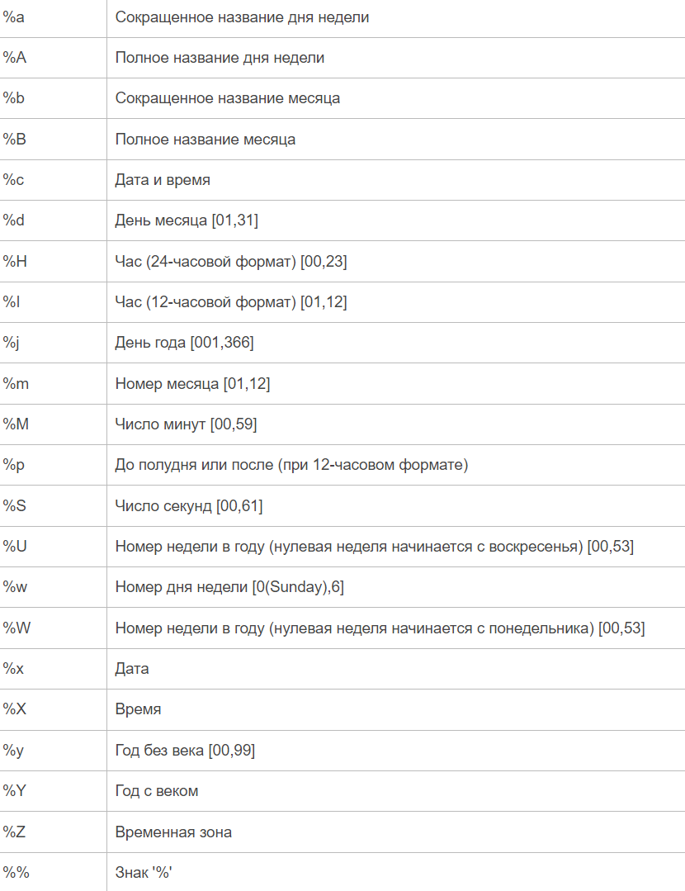

План обучения py#
Установка Vs Code + Python.#
RuLang: Шестерёнка -> Command Pallete -> Вводим ‘lang’ -> Configure Display Language -> ‘Русский’
Расширение Python
Расширение Code Runner
Параметры:
Установить стандартное автосохрание -> Файл -> Автосохранение
Изменить шрифт -> editor.fontSize -> 16
Code-runner: Save file before run [галочка стоит]
Code-runner: Run in terminal [галочка стоит]
Settings.json -Очистка консоли: “code-runner.executorMap”: { “python”: “clear; python -u” }
Создать папку на рабочем столе -> Открываем её в Vscode -> Далее создаем два файла -> main.lua/py theory.lua/py
Выключить Ai chat и прочее в настройках: Chat: Disable Ai Freatures
Введение.#
print("Hello World")
Что такое комментарии.
Переменные.#
-Зачем они нужны, как мы бы жили без них.
-Оператор присваивания; Каждый символ в программировании важен, в том числе пробел.
-Представляем, что переменная это коробка в которую мы можем поместить только одно значение.
name = 'Ivan'
-Как можно и как нельзя создавать переменные.
-Название переменной желательно должно соответствовать ее содержанию.
-Можно:
isName = None
my_name = None
number1 = None
k0l0b0k = None
KEK = None
-Нельзя:
1var
использовать название команд
спец символы !@#
-Программа читает код каждую строку поочереди.
-По этому, одна и та же переменная может иметь различные значения в разных частях кода:
a = 'one'
print(a)
a = 'two'
print(a)
-Чувствительность к верхнему и нижнему регистру:
a = 0
A = 1
-Как поместить значение переменной в другую переменную:
a = 42
b = a
-Сперва читаем то что справа от равно, а потом слева от равно.
-Поменять значения переменных: a, b = b, a
-Каскадное присваивание: x=y=z=0
-Множественное присваивание: x, y, z = 1, 2, 3
-Как обозначается ничего: None
-Типы данных или Типы переменных.
- str - СТРОКИ - определяются кавычками "_" или '_'
- int - ЧИСЛА - только цифры, без пробелов и кавычек.
- bool - ЛОГИКА - логическое значение, может содержать True/False (обязательно писать с большой буквы)
- float - тоже числа, но с запятой
-Каждый тип можно представить в виде комнаты со своими правилами.
-Примеры.
К числам можно применять знак минус, а к строкам и логике - нет.
Сравнение 10 и '10'
-type() - функция показывающая тип переменной
На самом деле почти всё имеет свой тип. Остальные типы данных будем проходить на следующих уроках.
-Функции для изменения типов:
str()
int()
bool()
float()
Ввод/Вывод.#
-input('text')
-print(end=, sep=)
Арифметические операторы и операции.#
- (+ - * / // % **)
- минус "-" меняет знак числа на противоположный
- Функции.
abs(x) - вычисляет модуль числа x
round(x, y) - округляет x до ближайшего целого. y - максимальное кол цифр после запятой
min(x1, x2,?,x_n) - находит минимальное, среди указанных чисел
max(x1, x2,?,x_n) - находит максимальное, среди указанных чисел
pow(x, y) - возводит x в степень y
- import math, методы.
math.ceil(x) - возвращает ближайшее наибольшее целое для x
math.floor(x) - возвращает ближайшее наименьшее целое для x
math.fabs(x) - возвращает модуль числа x
math.factorial(x) - вычисляет факториал x!
math.exp(x) - вычисляет e**x
math.log2(x) - вычисляет логарифм по основанию 2
math.log10(x) - вычисляет логарифм по основанию 10
math.log(x, [base]) - вычисляет логарифм по указанному основанию base (по умолчанию base = e ? натуральный логарифм)
math.pow(x, y) - возводит число x в степень y
math.sqrt(x) - вычисляет квадратный корень из x
-Тригонометрические функции
math.cos(x) - вычисляет косинус x
math.sin(x) - вычисляет синус x
math.tan(x) - вычисляет тангенс x
math.acos(x) - вычисляет арккосинус x
math.asin(x) - вычисляет арксинус x
math.atan(x) - вычисляет арктангенс x
-Математические константы
math.pi - число пи
math.e - число e
Условные и логические операторы.#
a = 1 > 2
b = 2 < 3
c = 4 >= 4
d = 5 <= 6
e = 6 == 6 # равно
f = 7 != 8 # не равно
Логические операторы.#
- and, or.
- not
- is
- and имеет больший приоритет чем or
- Приоритет действий и операций - https://letpy.com/handbook/operator-priorities/
Строки.#
-Есть два вида кавычек "text" и 'text'
-"""Многострочные строки""", '''Многострочные строки, пример 2'''
-Перевод строки \n: 'hello\nworld'
-Пустая строка: ""
-Конкатенация или cоединение строк: 'str1' + 'str2'; 'str1' + ' ' + 'str2'
-Умножение строк: 'str' * 10
-Проверка (не)наличия в строке той или иной подстроки:
'a' in 'abc'
'x' not in 'abc'
-Форматирование строки:
platypus = "Алекс"
pig = "Пепе"
"Утконос %s шел мимо поля" % platypus
"Утконос %s шел мимо поля и встретил свинку %s" % (platypus, pig)
f"Утконос {platypus} шел мимо поля и встретил свинку {pig}"
-Индексы, тип str, str[-1]
-Cрезы [5:10] [0:-1] [start:stop:step]
-Реверс строки: [::-1]
-len(str)
-ord(), id(), chr()
-Сравнение строк с помощью условных операторов:
"ABC" != 'abc'; (пример с логином и паролем)
'a' < 'b' (разобрать, почему это True)
-Изменение строки, добавление/удаление символов в конце/начале/середине.
msg = "Hello World!"
newmsg = msg[:6]+"w"+msg[7:9]+msg[10:]
-Что такое методы, как они работают, "возвращаемые и невозвращаемые".
-Методы строк.
str.upper() - буквы становятся большими
str.lower() - буквы становятся маленькими
str.count('ra', start, stop) - посчитать сколько вхождений 'ra' (start, stop - можно использовать срезы)
str.find('a', start, stop) - находит индекс первого 'a', слева направо. возвращает -1 если буквы нет
str.rfind() - работает так же как find, но начинает поиск справа
str.index('a') - аналог find, возвращает ошибку если буква не найдена
str.replace('a', 'b') - меняет все 'a' на 'b'
str.replace('a', 'b', amount) - меняет все 'a' на 'b', amount - максимальное количество замен
str.isalpha() - возвращает True, если все символы являются буквами, иначе False.
str.isdigit() - возвращает True, если все символы являются цифрами, иначе False.
str.rjust(10, '!') - добавляет символы слева строки, если индексов меньше 10.
str.ljust() - тоже самое что rjust, только справа.
str.split() - разбивает строку в местах где есть пробелы, на выходе получаем список.
str.split('-') - аналогично. разбивает строку в местах где есть символ '-'. Вместо '-' можно использовать любой другой символ.
str.strip() - удаляет пробелы и переносы строк в начале и конце строки.
'...'.join(list) - соединяет все элементы списка в строку, между элементами ставится "..." (важно, чтобы в list были только элементы с типом str)
str.isupper() - возвращает True, если все буквы в строке верхнего регистра.
str.islower() - возвращает True, если все буквы в строке нижнего регистра.
Условия.#
-Что такое табуирование? Это отступы, которые ставятся с помощью клавиши TAB.
-Что такое заголовок/тело
-if (заголовок, тело условия)
-if-elif-elif-elif-elif-else (> < >= <= == !=)
-Наличие тока для включения лампочки.
tok = false
if tok == true then
print('Лампа включена')
-Неплохой пример, показывающий поэтапность действий, и то что при первом срабатывании условия оно останавливается.
temp = int(input())
if temp > 10:
print('Погода атас, бежим гулять!')
elif temp > 0:
print('Идем гулять, но нужно взять теплые вещи!')
elif temp < 0:
print('Остаемся дома и смотрим кино')
else:
print('Ого, нулевая температура')
-одиночные проверки, if var > 5: print('hello')
-сравнение строк
-and, or и not (снова повторить)
-пример: входит ли число в диапазон чисел от 0 до 10
-пример: одно число входит в диапазон, а другое не входит
-Тернарный условный оператор:
a, b = 12, 7
var = True if a > b else False
-Как найти четное число:
n = int(input())
if n % 2 == 0:
print('число четное')
else:
print('число не четное')
-Является ли переменная строкой:
s = 'took-took'
if type(s) == str:
print('да')
else:
print('нет')
Списки.#
-пример списка
-тип list
-вывести весь список
-обратится к одному элементу по индексу
-добавление в список lst.append()
-удаление из списка lst.remove()
-удаление элемента списка по индексу del lst[1]
-заменить элемент lst[0] = 'new'
-срезы [5:10] [0:-1] [start:stop:step] [::-1]
-соединение списков lst = [1,2,3] + [4,5,6]
-положить элемент в середину списка с помощью соединения
lst = ['a','b','d']
lst = lst[:2] + ['c'] + lst[2:]
print(lst)
-длина списка функцией len()
-создание пустого списка
-быстрое создание большого списка с помощью умножения lst = [0]*100
-список может содержать любой другой тип данных
-найти элемент списка в списке list[0][0]
-'abc' in lst
-функция list(), например переводит строку в список
-функции max(lst) min(lst)
-сумма элементов sum(lst)
-sorted(lst) - функция сортировки чисел по возрастанию; sorted(lst, reverse=True) - по убыванию.
-сравнение списков lst == lst (> < и т.д.)
-методы списков:
list.append(element) - Добавляет элемент в конец списка
list.extend([element1, element2]) - Добавляет сразу несколько элементов в список
list.remove(element) - Удаляет элемент по значению
list.insert(index, element) - Вставляет элемент в указанное место списка
list.pop() - Удаляет последний элемент, либо элемент с указанным индексом в скобках
list.clear() - Очищает список (удаляет все элементы)
list.copy() - Возвращает копию списка
list.count(value) - Возвращает число элементов с указанным значением value
list.index(element) - Возвращает индекс первого найденного элемента element
list.reverse() - Меняет порядок следования элементов на обратный
list.sort() - Сортирует элементы списка
sorted(lst) - сортировка по возрастанию
sorted(lst, reverse=True) - сортировка по убыванию
''.join(line) - соединяет все элементы списка в одну строку (важно, чтобы в list были только элементы с типом str)
'-'.join(list) - тоже самое, только между элементами ставится "-"
del list[0] - удаление элемента по индексу
Циклы.#
-ВАЖНО! Показывать работу циклов примера с мельницей. Расписывать полностью поэтапность действий цикла!
-Итерация - это одно повторение цикла.
-while (заголовок, тело цикла)
-работает, когда имеет значение True
-условные операторы в цикле (можно писать все те же самые условия, что и в условном операторе if)
-счетчик
-перебрать цифры до 100
-перебрать цифры от 50 до 100
-for
-имеет собственную переменную; перебирает элементы
-range(start, stop, step) - создает расстояние между двумя цифрами "start" и "stop", с указанным шагом "step"; range(10,0,-1)
-с помощью for можно перебирать элементы списка или строки
пример: изменение всех элементов списка
-break, continue, else
break - остановка цикла
continue - переход на следующую итерацию
else - срабатывает после остановки цикла, не работает с break
-сокращения += -= *= /= //= %= **=
-input() внутри циклов
-10 in range(0,20)
-вложенные циклы(цикл внутри цикла).
# Создание матрицы 5х5:
A = []
for y in range(5):
A.append([])
for x in range(5):
A[y].append(x)
# print(A)
# Вывод матрицы:
for i in range(5):
for j in range(5):
print(A[i][j])
print()
Генераторы списков. list comprehensions.#
-Пример без генератора:
A=[]
N=10
for x in range(N):
A.append(x**2)
print(A)
-Пример с генератором:
N=10
A = [x**2 for x in range(N)]
print(A)
-Список только из четных чисел [x**2 for x in range(N) if x % 2 != 0]
-Простой список из очереди цифр
-Выборка слов состоящих максимум из 7 букв:
cities = ["Москва", "Тверь", "Рязань", "Ярославль", "Владимир"]
A = [city for city in cities if len(city) < 7]
print(A)
-Вложенные генераторы списков
M, N = 3, 4
matrix = [[a for a in range(M)] for b in range(N)]
print(matrix)
Кортежи.#
-Кортежи это неизменяемые списки.
-Они меньше занимают памяти.
a = (1,2,3,4,5)
b = [1,2,3,4,5]
print(a.__sizeof__())
print(b.__sizeof__())
-Создание кортежа:
new_tpl = tuple()
new_tpl = ()
new_tpl = ('a') - не получится
new_tpl = ('a',)
new_tpl = 'a',
-Разбить строку на кортеж: tuple('str')
-Индексы и срезы
-Конкатенация, умножение
-Операции in/not in
-Кортеж можно перебирать с помощью for
-Методы кортежей.
tuple.index(element) - Поиск позиции элемента в кортеже
tuple.count(element) - Количество вхождений элемента в кортеж
Словари.#
-Тип dict.
-Похожи на списки, только нужно самостоятельно создавать индексы для элементов. Это называется ключ:значение. В списках мы находили значение по индексу, а здесь по самостоятельно созданному ключу.
-{Ключ:значение}
-Создание словаря: d = {'key1':'value1', 'key2':'value2', 'key3':'value3'}
-Найти значение по ключу: d['key1']
-Добавить новый ключ: d['new_key'] = 'new_value'
-Заменить значение по ключу: d['key2'] = 'Cyan'
-Удалить ключ: del d['key3']
-Названия ключей могут быть: int, str, bool, tuple или любой другой неизменяемый тип данных; (например, list - изменяемый). У значений нет орграничений.
-Названия ключей уникальны, если создать два одинаковых ключа, то будет работать последний.
-Функция-конструктор dict()
d2 = dict(house = "дом", car = "машина", tree = "дерево", road = "дорога", river = "река")
lst = [[2, "неудовлетворительно"], [3, "удовлетворительно"], [4, "хорошо"], [5, "отлично"]]
d3 = dict(lst)
-dict.fromkeys() - Возвращает словарь, сформированный из указанной последовательности(например, из списка)
a = dict.fromkeys(["+7", "+6", "+5", "+4"])
a = dict.fromkeys(["+7", "+6", "+5", "+4"], "value")
-После удаления несуществующего ключа возникнет ошибка.
-Проверка существует ли определенный ключ в словаре: 'abc' in d; или наоборот: 'abc' not in d
-Пустой словарь d = {}; d = dict()
-len(d)
-Словарь можно перебрать через цикл for
-Сортировка.
sorted(d) - сортировка по возрастанию ключей
sorted(d, reverse=True) - сортировка по убыванию
-Методы словарей.
dict.clear() - Удаление всех записей
dict.copy() - Создание копии словаря
dict.get(key) - Позволяет получать значение словаря по ключу (при указании неверного ключа не возникает ошибки, а выдается по умолчанию значение None)
dict.get("Несуществующий_ключ", False) - При ошибке будет выводится False
dict.setdefault(key[, default]) - Возвращает значение ключа key и если его нет, то добавляет его в словарь со значением None, либо со значением default, если оно указано
dict.pop(key) - Удаляет указанный ключ и возвращает его значение
dict.pop("abc", False) - Здесь возвратится False. Если же ключ присутствует, то возвращается его значение.
dict.popitem() - Удаляет и возвращает последний ключ:значение в виде кортежа (key, value)
dict.keys() - Возвращает коллекцию ключей (Удобно использовать в цикле for)
dict.values() - Возвращает коллекцию из значений словаря (Удобно использовать в цикле for)
dict.items() - Возвращает записи в виде кортежей: ключ, значение (Удобно использовать в цикле for)
dict.update({key:value}) - Позволяет дополнить словарь новыми значениями, или обновить существующие ключи с новыми значениями
dict.fromkeys() - Возвращает словарь, сформированный из указанной последовательности(например, из списка)
a = dict.fromkeys(["+7", "+6", "+5", "+4"])
a = dict.fromkeys(["+7", "+6", "+5", "+4"], "value")
Множества.#
-Тип set
-Множество ? это неупорядоченная коллекция уникальных элементов.
-Пример: a = {1, 2, 3, "hello"}
-Повторяющиеся значения будут проигнорированы: a = {1,2,3,"hello", 2,3, "hello"}
-Можно использовать только неизменяемые типы: str, int, tuple
-Функция set() позволяет создать множество:
a = set()
b=set("hello world!")
c=set([1,1,2,3,5,3,2,1])
d=set(range(7)) - или даже функцию range()
-Невозможно создать множество с помощью b = {} - это будет словарь
-Пример удаление всех дубликатов в списке:
a=[1,2,3,43,2,4,3,2,1]
b=set(a)
a=list(b)
a=list(set(a))
-Перечисление с помощью for:
setA = {7,6,5,4,3}
for x in setA:
print(x)
-Множество ? это неупорядоченная коллекция, setA[0] приведет к ошибке.
-Методы множества.
set.add(7) - Добавить новое значение.
set.update(element) - Добавить несколько новых значений. Вместо element можно указывать любой перебираемый объект, str, list, tuple...
set.discard(2) - Удаление элемента по значению, без ошибки.
set.remove(4) - Удаление элемента по значению, будет ошибка, если 4 отсутствует в множестве.
set.pop() - Удаляет и возвращает первый элемент множества.
set.clear() - Удалить все элементы множества.
-Операции над множествами - https://proproprogs.ru/python_base/operacii-nad-mnozhestvami
Функции.#
-Команда которая имеет в конце скобки называется функцией, она выполняет заранее подготовленный список действий в тот момент, когда мы ее вызовем.
Функции могут иметь аргументы, они вводятся в скобки, через запятую. В Python есть готовые функции, такие как print().
Но так же мы можем создавать свои функции.
-Функция без аргументов. Создание и вызов функции. Нельзя вызывать функции до создания.
-Вызов функции. Со скобками и без них.
-Создать ссылку для функции. a = func; a()
-Аргументы в функции.
Их может быть неопределенное количество, и их легко перепутать с переменными.
Они работают только внутри своей функции.
Ранее созданные переменные работают в функции, но их нельзя изменить без глобализации.
-global variables,a,b,c
-Пример: Функция с одним аргументов приводящее число в число с второй степенью.
-return - Возвращает значение и завершает функцию.
-Присвоить возвращаемые значения функции переменной a = func(x,y)
-Несколько возвращаемых значений в виде кортежа; или так: a,b = func(x,y)
-Что значит "Функция возвращает значение".
-Значения аргументов по умолчанию func(x=0, y=0)
-Условия и циклы внутри функций.
-Что такое *args и **kwargs
# Объявление функции.
def func():
print('Помахать рукой')
print('Подойти к человеку')
print('Пожать руку')
print('Приветствие:')
print('Здравствуйте, человек!')
# Конец функции.
func() # Запуск функции
func()
print(func) # объект функции; не является запуском
# Функция с аргументами
def func(name): # Можно создавать неограниченное кол-во аргументов
print('Помахать рукой')
print('Подойти к ' + name)
print('Пожать руку')
print('Приветствие:')
print('Здравствуйте, ' + name)
func(name='Федор')
func(name='Майя')
# Пример функции, которая имеет два аргумента в виде чисел, и выводит их сумму
# func() # Нельзя вызывать функцию до её объявления.
def summa(a, b):
res = a + b
print(res)
summa(a=5, b=2)
# Данная функция вернет None, и является
# "Невозвращаемой функцией"
c = summa(a=5, b=2)
# Возвращаемая функция
def summa2(a, b):
res = a + b
return res
c = summa2(a=10, b=25) # альтернативный вариант: c = summa(5, 2)
print(c) # 35
# Локальная и глобальная переменные
variable = 'глобальная переменная' # работает по всей площади скрипта
def example():
variable = 'Text' # локальная переменная, работает только внутри функции, где была создана
# Вызвать глобальную переменную внутри функции
variable = 'глобальная переменная'
def example():
print(variable) # глобальную переменную, функция спокойно видит
example()
# Попытка вызвать переменную функции, вне её
def example():
variable = 'переменная'
print(variable)
# print(variable) # ошибка; не существует вне функции
# У аргумента приоритет выше чем у глобальной переменной
variable = 'глобальная переменная'
def example(variable): # на этой строке variable - это аргумент, не путать с 'глобальной переменной'
print(variable) # выведется аргумент
example('содержимое аргумента') # 'содержимое аргумента'
# Попытка изменить глобальную переменную внутри функции
variable = 'глобальная переменная'
def example():
# print(variable) # ошибка; (!Не факт, что нужно показывать данную строчку как пример!)
variable = 'новое значение' # здесь variable - новая локальная переменная
print(variable) # 'новое значение'
example()
print(variable) # 'глобальная переменная'; изменение не сохранилось
# Чтобы изменять глобальную переменную внутри функции, необходимо ее глобализировать
variable = False
def change():
global variable # можно сразу несколько global a,b,c
variable = True
print(variable) # False
change()
print(variable) # True
# Создание новой глобальной переменной внутри функции
def newglobal():
global x, y, z
x, y, z = 1, 2, 3
newglobal()
print(x, y, z) # 1, 2, 3
# Дефолтное значение для аргументов
def def_value(variable=None):
print(variable)
example(variable='Text') # 'Text'
example() # None
# Передаем ссылку на функцию другой переменной
new_name = example2
new_name()
example2()
# Присвоить возвращаемые значения функции переменной: a = func(x,y)
# Несколько возвращаемых значений в виде кортежа: a,b = func(x,y)
# Можно использовать Условия и Циклы внутри функций.
# *args и **kwargs
Введение в Модули.#
Что такое модули/библиотеки/пакеты
Как установить (на примере cowsay)
Как импортировать (только import)
Как создать свой
способы импорта:\
import module as mdfrom module import *from module import <attribute>from module import <attribute> as attr
Модуль time#
import time
# Остановка скрипта на 3 секунды
time.sleep(3)
# Количество секунд с начала цифрового века (1970)
seconds = time.time()
# Количество лет с начала цифр. века
years = seconds / 60 / 60 / 24 / 365
time_now = time.ctime(seconds)
Модуль datetime#
from datetime import *
# Время сейчас
now = datetime.now()
# Получить из объекта времени только часы и минуты
print(now.hour, now.minute)
# Количество секунд с начала цифрового века (1970)
datetime.timestamp(now)
# Количество дней с начала цифрового века
datetime.toordinal(now)
# Изменить атрибуты datetime объекта в котором хранится дата
now = now.replace(day=1)
# Создать объект времени, в котором будет храниться 3 часа
three_hour = timedelta(hours=3)
# Вычитаем из объекта времени "now" 3 часа
edit_time = now - three_hour
# Создать фиксированную дату
fixdate = datetime(year=1, month=1, day=1)
a = now - fixdate # тоже можем вычитать или суммировать
# Или даже сравнивать объекты времени (> < >= <= != ==)
print(now <= fixdate)
# Форматируем объект даты в строку, с гибкими настройками
s = datetime.strftime(
now, "%d.%m.%Y | %H:%M:%S")
# Форматируем строку в объект datetime
t = datetime.strptime(
s, "%d.%m.%Y | %H:%M:%S")
Формат |
Значение |
|---|---|
%a |
Сокращенное название дня недели |
%A |
Полное название дня недели |
%b |
Сокращенное название месяца |
%B |
Полное название месяца |
%c |
Дата и время |
%d |
День месяца [01,31] |
%H |
Час (24-часовой формат) [00,23] |
%I |
Час (12-часовой формат) [01,12] |
%j |
День года [001,366] |
%m |
Номер месяца [01,12] |
%M |
Число минут [00,59] |
%p |
До полудня или после (при 12-часовом формате) |
%S |
Число секунд [00,61] |
%U |
Номер недели в году (нулевая неделя начинается с воскресенья) [00,53] |
%w |
Номер дня недели [0(Sunday),6] |
%W |
Номер недели в году (нулевая неделя начинается с понедельника) [00,53] |
%x |
Дата |
%X |
Время |
%y |
Год без века [00,99] |
%Y |
Год с веком |
%Z |
Временная зона |
%% |
Знак ‘%’ |

Модуль Turtle#
-Дополнить
Рекурсивные функции#
import time
def func():
time.sleep(3)
print('hello world')
func()
func()
Коллбэк функция#
# Коллбэк это аргумент или переменная которая может принимать функции и вдальнейшем она вызывается
def welcome(name):
print("Привет %s" % name)
dublicate = welcome
dublicate('Имя')
# Идеальный пример callback-функции
# time_spent функция считает время работы функции
import time
def time_spent(func, *args):
a = time.time()
func(args) # func - это и есть callback
b = time.time()
print(b - a)
time_spent(min, 1,2,3,4,5,6,7,8)
time_spent(max, 1,2,3,4,5,6,7,8)
# Можно еще такой пример привести и заодно разобрать requests
import requests
def connection(*args):
url = "https://soundcloud.com"
session = requests.get(url)
print(session.content)
time_spent(connection)
Лямбда функция или анонимная функция#
s = lambda a, b: a + b
# r = s(1, 2)
a = [1,2,3, lambda: print('lambda')]
# a[3]()
# print(a)
# Лямбду можно оиспользовать при сортировки словаря:
array = {"1.01": [True, "a", 8],
"6.41": [False, "c", 0],
"-5.49": [False, "b", 5],
"7.09": [True, "d", 7],
"9.09": [True, "f", 1],
"3.09": [False, "e", 4]}
def func(data):
return data[1][1]
# здесь lambda это альтернативный вариант функции func сверху
result = dict(sorted(array.items(), key=lambda x: x[1][1]))
# Фильтр который удаляет все ключи где есть в списке True
result = dict(list(filter(lambda x: x[1][0], array.items())))
# Фильтр который удаляет все ключи где есть в списке четные числа
result = dict(list(filter(lambda x: x[1][2] % 2 == 0,
array.items())))
# print(result)
# map
lst = [10, 20, 30, -30, -20, -10]
lst2 = map(str, lst) # перевели все значения списка в строки
s = "".join(lst2) # объединили все значения списка в сплошную строку, итог: "102030-30-20-10"
# map вместе с лябмдой
lst3 = map(lambda x: str(10) if x >= 0 else f"|{x}|", lst)
s = "".join(lst3)
print(s)
-Пример. s = lambda a, b: a + b s(1,2) У данной функции два параметра a и b, а затем, через двоеточие написано, что с ними нужно сделать. -Пример 2. a = [4, 5, lambda: print(“lambda”), 7, 8] a2 -Пример 3 (Функция, которая выыбирает значение из этого списка по определенному критерию (фильтру)). lst = [5, 3, 0, -6, 8, 10, 1] def get_filter(a, filter=None): if filter is None: return a
res = []
for x in a:
if filter(x):
res.append(x)
return res
-Если вызвать ее только с первым аргументом:
lst = [5, 3, 0, -6, 8, 10, 1]
r = get_filter(lst)
print(r)
-Если вторым аргументом передать вот такую лямбда-функцию:
r = get_filter(lst, lambda p: p % 2 == 0)
-возвратится новый список, состоящий только из четных значений
-Если бы их не существовало, нам бы пришлось объявлять отдельную функцию:
def even(p):
return p % 2 == 0
r = get_filter(lst, even)
-Анонимная функция удобна тем, что мы можем быстро поменять условия фильтра.
r = get_filter(lst, lambda p: p > 0)
-У таких функций есть одно существенное ограничение ? в них можно прописать только одну конструкцию.
-Нельзя объявлять анонимные функции в несколько строк:
lambda a:
print(a)
-Нельзя использовать оператор присваивания:
lambda a: a = 1
-Правильные примеры:
s = lambda a: a + 1
s(1)
p = lambda: "hello python"
p()
Декораторы#
# from functools import wraps
def detect(func):
# @wraps(func)
def updatefunc(*args, **kwargs):
try:
return func(*args, **kwargs)
except BaseException as err:
print(f'Ошибка в функции {func.__name__}: {err}')
return
return updatefunc
@detect # новый вариант декорирования
def test(a, b):
print(a / b)
# test = detect(test) # старый вариант декорирования
@detect
def test2(text):
res = text.upper()
print(res)
test(1, 0) # Ошибка
test2('privet')
ООП#
-Инкапсуляция, наследование, полиморфизм.
-Инкапсуляция - это принцип, согласно которому внутреннее устройство сущностей нужно объединять в специальной
«оболочке» и скрывать от вмешательств извне. Доступ к объектам возможен через специальные открытые методы, а
напрямую обратиться к их содержимому нельзя.
-Наследование - это механизм, при котором один класс приобретает свойство другого класса
-Полиморфизм - возможность работы с совершенно разными объектами (языка Python) единым образом. Пример:
Курсор может принимать различные формы, такие как стрелка, линия, крест или другие фигуры.
-Классы
Объекты / экземпляры
Свойства / атрибуты
Методы
-Что такое self
-Магические методы.
- __dict__
- __init__ (Показать как будет работать инициализация с помощью обычного созданного вручную метода, а потом просто подставить __init__)
- __del__
...
Разное#
-reversed()
-isinstance(10, int) - Позволяет проверить принадлежность экземпляра к классу (является ли 10 типом данных int).
! isinstance(True, int) -> True !
-exec() - исполнение кода из строки
-eval() - исполнение кода из строки (только функции, команды или выражения)
-Оператор моржа(walrus) или моржовый оператор-> :=
-Глубокое копирование элемента, подходит для кортежей -> copy.deepcopy(tuple)
-Обычное копирование -> copy.copy
Функция map.#
-https://proproprogs.ru/python_base/python3-funkciya-map-primery-ee-ispolzovaniya
Функция filter для отбора значений итерируемых объектов.#
-https://proproprogs.ru/python_base/python3-funkciya-filter-dlya-otbora-znacheniy-iteriruemyh-obektov
Функция zip.(Редко используется)#
https://proproprogs.ru/python_base/python3-funkciya-zip-primery-ispolzovaniya
Функция-генератор. Оператор yield.#
-https://proproprogs.ru/python_base/python3-funkciya-generator-operator-yield
Особенности сортировки через sort() и sorted().#
https://proproprogs.ru/python_base/python3-osobennosti-sortirovki-cherez-sort-i-sorted
Итераторы и выражения-генераторы.#
-Генератор ? это итератор, элементы которого можно перебирать (итерировать) только один раз.
-Итератор ? это объект, который поддерживает функцию next() для перехода к следующему элементу коллекции.
-Итерируемый объект ? это объект, который позволяет поочередно обойти свои элементы и может быть преобразован к итератору.
a = [x**2 for x in range(10)] # Генератор списков
print(a)
b = (x**2 for x in range(10)) # Выражение-генератор
print(b)
lst = list(b) # Перевести в список
a = [1,2,3] # Итерируемый объект
it = iter(a) # Преобразование списка в итератор
print(next(it)) # Перебираем генератор
print(next(it)) # Перебираем генератор
print(sum(b))
lst = (x for x in range(1000000000))
for i in lst:
print(i, end="")
if i > 100: break
Обработка ошибок и исключений.#
try, except
else - выполняется, когда не произошло никаких ошибок
finally - выполняется всегда в самом конце, вне зависимости произошла ошибка или нет
assert - вызывается ошибка если утверждение возвращает ложь
raise - возбуждает/поднимает указанное исключение -> raise BaseException(‘Мы вызвали ошибку’)
Примеры:
try:
a = int(input())
b = int(input())
print(a / b)
except ZeroDivisionError as err:
print("Делить на ноль нельзя:", err)
except ValueError:
print("Введено неправильное значение")
except:
print('Ошибка')
# Нечасто используется (else и finally):
else:
print("Выполняется, когда не произошло никаких ошибок")
finally:
print("Выполняется абсолютно всегда, в самом конце.")
a = 3
assert a != 3 # вызовется ошибка, так как a != 3 это False
assert a != 3, "Свое описание ошибки" # можно добавить описание ошибки
raise BaseException("Свое описание ошибки")
Работа с файлами.#
file = open('text.txt, 'w')
file.write('hey')
file.writelines(['hey','hey2]) # heyhey2 (непонятно зачем нужен)
file = open('text.txt, 'r')
file.read() # читает весь файл
file.readline() # при каждом вызове читаем следующую строчку
file.readlines() # список со всеми строками
-Прочтение с помощью цикла
for line in file:
print(line)
file.close() # закрытие файла
-Зачастую надо дописывать в open -> encoding='utf-8'
-Обозначения:
r - чтение
w - запись/перезапись (создается файл, если не существует)
a - дозапись
a+ - дозапись и чтение (создается файл, если не существует)
+ - запись/чтение (r+, w+)
x - вызывает ошибку, если файл существует, иначе создает файл и открывает его на запись
- with file open('name.txt', 'w', encoding='utf-8'):
file.write('hello world')
https://metanit.com/python/tutorial/4.1.php
https://docs-python.ru/tutorial/vstroennye-funktsii-interpretatora-python/funktsija-open/
https://letpy.com/handbook/builtins/open/
Работа с json#
import json
# Прочитать файл data.json
with open('data.json', 'r', encoding='utf-8') as file:
result = json.load(file) # Перевести содержимое файла в dict
print(result, type(result))
# Записать dict в data.json
data = {"1234": "ASDFG"}
with open('data.json', 'w', encoding='utf-8') as file:
result = json.dumps(data) # Перевести dict в str
# result = json.dumps(data, ensure_ascii=False) # если есть абракадабра после записи
file.write(result) # Записать в файл
# Еще неплохой способ
# indent=4 - автоматически выравнивает json
with open("myfile.json", "w", encoding="utf-8") as file:
json.dump(data, file, indent=4, ensure_ascii=False)
Модуль os#
import os
# Работа с папками.
# Посмотреть все файлы папки и подпапки по пути path
path = "C:\HOME\PROG\web"
result = list(os.walk(path))
print(result)
# Посмотреть только файлы по пути path
files = os.listdir(path)
print(files)
# Создание папки (если уже существует будет ошибка)
os.mkdir("NEW")
# Создание папки (если существует, то ошибки не будет)
# Без "exist_ok=True" выйдет ошибка
os.makedirs("FOLDER", exist_ok=True)
# Проверить существует ли папка или файл
os.path.exists("folder/or/file")
print(os.name) # имя системы
print(os.environ)
os.environ["NEW VARIABLE"] = "123"
# Удаление папки (Если папки не существует, будет ошибка)
os.rmdir("NEW")
os.removedirs("NEW")
# Переименовать файл или папку
os.rename("NEW", "FOLDER")
# Другое.
# Исполняет команду в консоле, например cmd (если система windows)
result = os.system("dir")
print(result)
# Домашняя директория
homepath = os.path.expanduser("~")
print(homepath)
# Еще можно разобрать
icon_path = os.path.join(os.path.dirname(os.path.realpath(__file__)), "qspectrumanalyzer.svg")
# os.path.join
# os.path.dirname
# os.path.realpath
# Все команды os модуля: https://pythonworld.ru/moduli/modul-os.html
# Упражнения на os: https://www.w3resource.com/python-exercises/os/index.php
Перемещение файлов.#
import shutil
shutil.move("path/to/current/file.foo", "path/to/new/destination/for/file.foo")
Tkinter#
Где-то здесь надо пройти Tkinter
Pyqt#
Или даже Pyqt6 или Pyqt5
Модуль Requests#
Модуль requests и http запросы
Модуль requests-html#
Моудль requests-html и http запросы
Парсинг страниц, в том числе с javascript
Selenium#
Продвинутый парсинг
Аннотации#
https://clck.ru/339CnS
Асинхронное программирование async/await#
1. https://habr.com/ru/articles/667630
2. https://habr.com/ru/articles/671798/
Создание телеграм бота#
https://github.com/python-telegram-bot/python-telegram-bot
Просто начать с echo-бота, а там как пойдет
Pygame#
Изучение pygame
Ursina#
Изучение ursina
Регулярные выражения 're'#
https://docs.python.org/3/library/re.html#module-re
Решение проблем:#
-https://otvet.mail.ru/question/218478491 - Visual Studio Code не понимает русский язык в пути к файлу
-https://ru.stackoverflow.com/questions/1095365/%d0%9a%d0%b0%d0%ba-%d0%b8%d1%81%d0%bf%d0%be%d0%bb%d1%8c%d0%b7%d0%be%d0%b2%d0%b0%d1%82%d1%8c-pip-%d0%b4%d0%bb%d1%8f-%d1%80%d0%b0%d0%b7%d0%bd%d1%8b%d1%85-%d0%b2%d0%b5%d1%80%d1%81%d0%b8%d0%b9-python - Как использовать pip для разных версий python?
Дополнить план обучения следующим:#
- ComputerVision (Очень много можно придумать тем для выявления разного всего, и может быть создания масок типа "Очки" и пр.)
- Парсинг с помощью Selenium
- Создание сайта с помощью Flask (фронтенд) и может быть еще Django (бэкенд)
- Создание оконных приложений с помощью wxPython
- enumerate()
- Что такое: if __name__ == "__main__"
Разное.#
Алгоритмы обработки списков.#
-Видео https://youtu.be/gMM7632kTkI?t=267 (4:27)
Элементы функционального подхода к программированию.#
https://clck.ru/333qU6